| Skill |
Description |
How to Obtain |
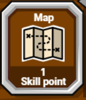 |
View a map of Solterra. |
Village of Gale
Cost: 10 gold |
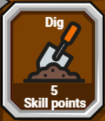 |
Allows you to dig for gold or other treasures. |
Level 3 |
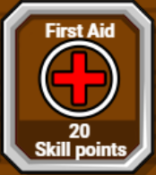 |
Removes poison and heals a small amount of health. |
Level 6 |
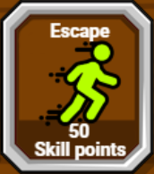 |
Run away from most attackers during battle.
(This rarely works on bosses or powerful foes.) |
Level 9 |
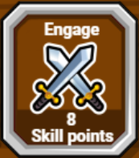 |
Instantly attack a nearby foe. |
Level 12 |
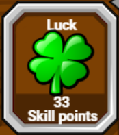 |
Grants a better chance for finding items.
Also grants a better chance for strong hits in battle.
Lasts 2 minutes. |
Level 17 |
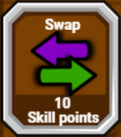 |
Swaps your current health and magic points. |
Level 21 |
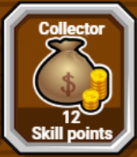 |
Helps you find gold, diamonds, and other valuables.
(Especially after battle and when bombing things.) |
Level 26 |
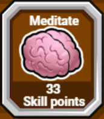 |
Once activated, your HP and MP will increase slowly until you move or are attacked. |
Level 32 |
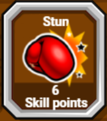 |
Causes your foe to not act for a moment.
At times, it may stop your foe from casting a spell. |
Robyn
(West of Gale) |
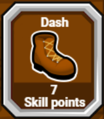 |
Lets you walk faster for 1 minute. |
Theo
Quest: Don't Be Late!
Where: Northeast of Gale |
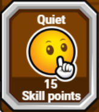 |
Reduces the chance that you will be attacked. (Lasts 2 minutes.) |
Nero
Quest: Item Finder.
Where: Mines of Mutrovia |
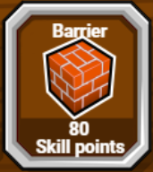 |
Puts up a protective barrier that blocks 100 points of physical attacks.
(This skill can be upgraded in the Mines of Mutrovia) |
Mount Morius
(Battle table: Mal Moria)
8% chance you will learn this upon victory. |
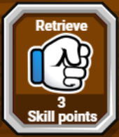 |
Allows you to take back stolen items from attackers. |
Silent Echo
(Mines of Mutrovia)
He will teach you this once you reach trial 3 in the quest, The Ninja Test |
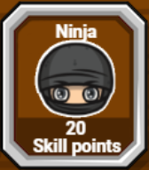 |
Greatly reduces chances of being attacked.
Allows you to dodge 25% of attackers normal attacks.
Attack bonus will always result in a triple hit!
Lasts about 2 minutes. |
Silent Echo
(Mines of Mutrovia)
Complete the 5 trials of the quest, The Ninja Test |
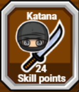 |
Divides attackers health points in half!
Only works if you are in ninja-mode.
Can only be used once per battle. |
Silver Scar
(Brymsol) |
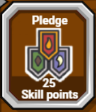 |
Allows you to switch Legions without reporting to Legion Headquarters. |
Legion Headquarters
South: 8, East: 3 |
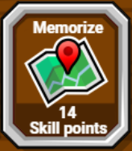 |
Sets a new spot for the magic spell of RETRACE. |
Ransford
West of Lake Ollusara |
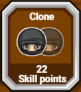 |
Creates a clone during battle that will confuse your attacker. |
Hollow Wind
Underground, north of Edelston |
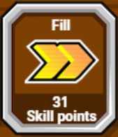 |
Instantly fills attack bonus gauge. |
Ry'Nolus
Quest: Oein's Dream |
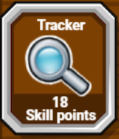 |
Helps find your hunting target.
Hunting level: Amateur
(Success is based on your current accuracy.) |
Hunting Lodge
40 Legion stones |
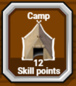 |
Resets any completed hunts.
Hunting level: Amateur
|
Hunting Lodge
120 Legion stones |
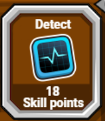 |
Displays weakness of some enemies.
(Currently only needed for 3 bosses.) |
Unbroken Canyons
Eastern Island |